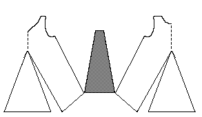

Pattern drawing based on a photograph in N�rlund. The shaded side gore is a guess on my part.This is a child's garment made of front and back pieces with a center gore and side gores. There may have been sleeves at one time, but there is no sign of them. The bottom edge is finished with sewn on with long darning stitches passing backwards and forwards.
The neck is v-shaped. The back is long and almost has a train. The length from shoulder to hem is 51 cm (20"), the waist is 62 cm (24.4") in circumference, and the circumference of the bottom edge is 157 cm (61.8"). The armhole is 26 cm (10.2") around, and the neckhole is is 42 cm (16.5").
The material is a brown, fine textured fourshaft twilled frieze.
Go to Tunic Page; Herjolsnes Site Page
Some Clothing of the Middle Ages -- Tunics -- Herjolfsnes 61, by I. Marc Carlson, Copyright 1997 This code is given for the free exchange of information, provided the Author's Name is included in all future revisions, and no money change hands-